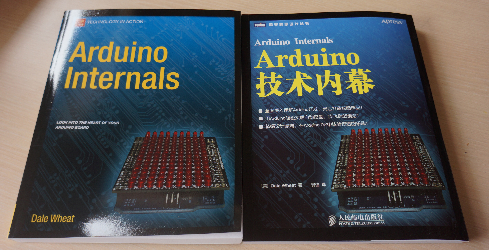

《Arduino技术内幕》是翻译自A Press于2011年下半年出版的由Dale Wheat所著的《Arduino Internals》。
本书已经上架，购买链接如下：
本书适合各个层次的Arduino用户阅读参考，无论跃跃欲试的新手，还是经验丰富的专家都能从中获益。也许你已经知道Arduino是什么，已经明白它能做什么，也许你已经有一块Arduino的板子，或者能从某处弄一块来试试。当然这些都不是必需的，对于阅读本书来说，你对Arduino和它内部秘密的兴趣就已经足够了。
第1章 硬件
看看有哪些Arduino模块，大致了解它们的内部工作原理。
第2章 软件
这一章是关于在Arduino内运行的程序的，程序的框架，如何直接写C语言的程序。
第3章 Atmel AVR
这一章详细介绍AVR单片机，包括SFR（功能寄存器）、片上外设等。
第4章 外围器件
这一章介绍Arduino板上单片机以外的其他元件，包括电源和串口等，也解释了GPIO的驱动能力等问题。
第5章 Arduino软件
这一章是关于在PC上的Arduino IDE的。
第6章 优化
本章将告诉你如何做优化，以及如何用精确的测量技术来验证优化。主要是通过直接操纵寄存器来实现原本用Arduino API函数做的功能，从而在代码大小和运行速度两方面实现优化。仔细研究AVR片上的外设，你可以用更少的代码实现更多的功能。
第7章 硬件和软件的结合
通过例子，本章详细解释了如何直接用寄存器操纵通用I/O端口、USART（串口）、计数器、定时器、PWM输出和模拟输入，还介绍了如何使用中断来实现硬件软件之间更有效的协作。
第8章 示例作品
LED闪烁？真的？如果是一个有权限控制的LED闪烁呢？如果最终做一个更复杂的作品，比如数字钟呢？
第9章 项目管理
处理一些开发过程中的事情，比如文档、协作和许可等。
第10章 硬件设计
算得上是完全覆盖了设计Arduino兼容或部分兼容的硬件的专业知识领域，包括电源供应、CPU芯片选择和shield接口设计，也介绍了一些硬件设计自动化工具。
第11章 软件设计
本章是对Arduino IDE的剖析，最终给出了如何自己配置IDE来对自己设计的新板子编程的方法。
第12章 网络
本章介绍串口通信，包括串口多机网络。另外本章还介绍了MIDI。
第13章 其他示例
由一系列独立作品有机组合而成的一个小型自动机器人的例子。需要用到本章之前所有的知识才能完成这个大作品。
这本书在图灵出版公司的页面是：http://www.ituring.com.cn/book/901，那里有评论和勘误，欢迎发表意见。